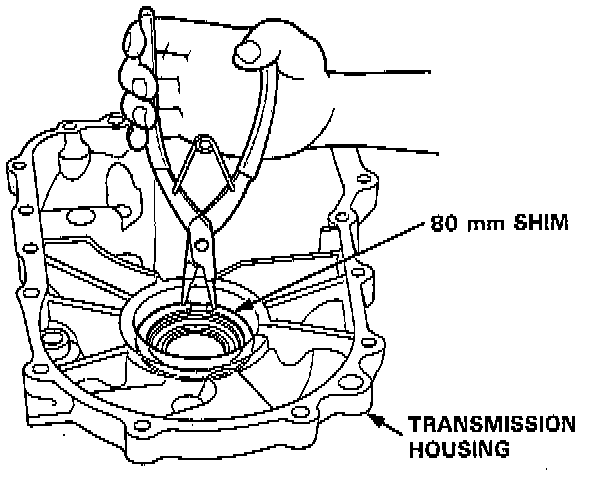
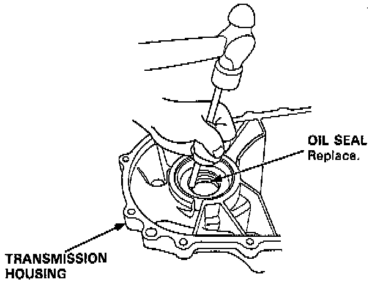
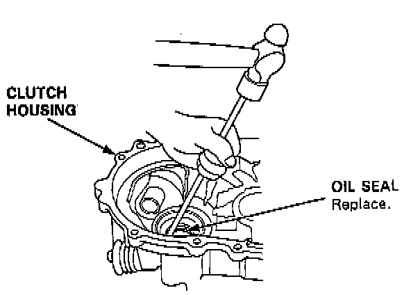
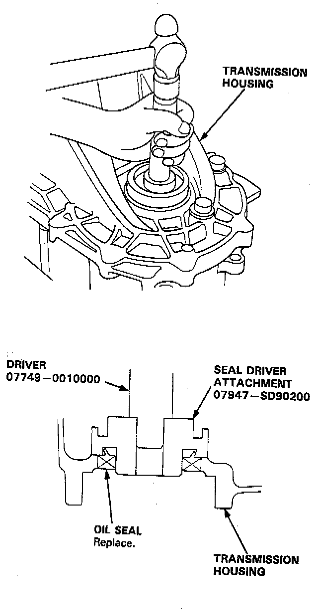
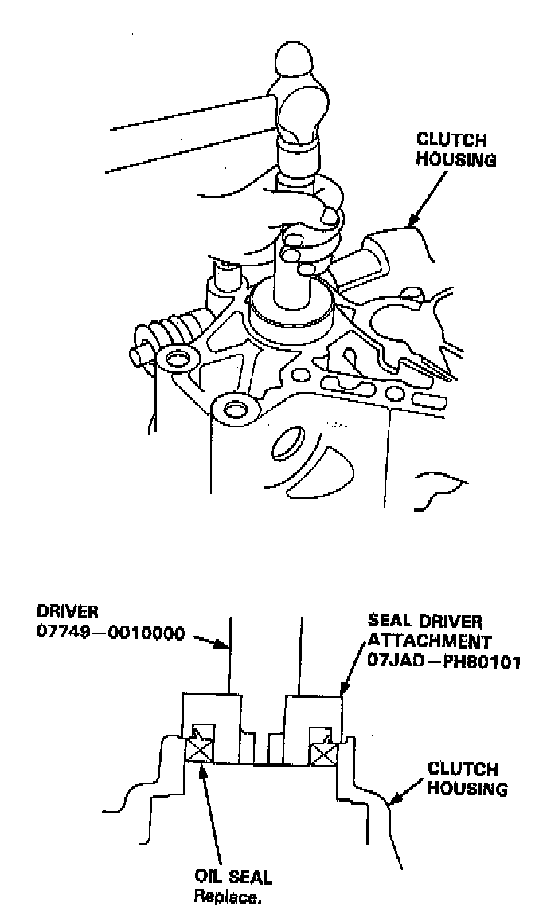

Oil Seal Replacement
TOOLS REQUIRED- 07947-SD90200 Seal Driver Attachment
- 07749-0010000 Driver
- 07JAD-PH80101 Seal Driver Attachment
- Or Equivalent
REMOVAL
1. Remove the differential assembly.

2. Remove the 80 mm shim from the transmission housing.

3. Remove the oil seal from the transmission housing.

4. Remove the oil seal from the clutch housing.
INSTALLATION

1. Install the oil seal into the transmission housing using the special tools as shown.

2. Install the oil seal into the clutch housing using the special tools as shown.